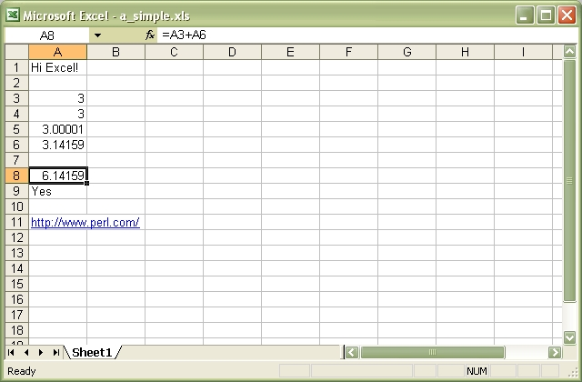
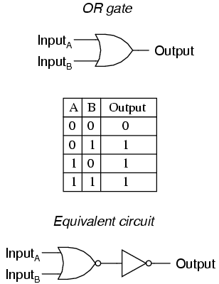

Turns your event spaghetti into clean and declarative feng shui bacon, by switching from imperative to functional.
Turns your event spaghetti into clean and declarative feng shui bacon, by switching from imperative to functional.
Imperative:
a = 1
b = 2
c = a + b
// c == 3
b = 2
// c == 3
Reactive:
a = 1
b = 2
c = a + b
// c == 3
b = 2
// c == 4
Spreadsheets
Logic circuit
fibRec f s = f : fibRec s (f + s)
fibonacci = fibRec 0 1
main = print (fibonacci !! 10)
The ':' operator adds an element to the head of a list. So, 1 : [2,3] yields [1,2,3]
Code:
function toMoney(value) { return accounting.formatMoney(value, '$', 0); }
var textbox = Bacon.$.textFieldValue($('#money'), 10);
textbox.map(toMoney)
.assign($('#output'), 'text');
textbox.changes()
.filter(function(value) { return value < 0; })
.onValue(function() { alert('Value must not be negative.'); });
Bacon.jQuery comes with bindings for basic inputs (like Bacon.$.textFieldValue)
You can make your own:
function simpleTextBinding(element) {
return Bacon.Binding({
get: function() { return element.text(); },
set: function(value) { element.text(value); },
events: Bacon.never()
// optionally, an initialValue property
});
}
Code:
var first = Bacon.$.textFieldValue($('#first'));
var last = Bacon.$.textFieldValue($('#last'));
var output = simpleTextBinding($('#output2'));
var fullNameStream = Bacon.combineTemplate({ firstName: first, lastName: last })
.map(function(combined) {
return 'Hi, ' + combined.firstName + ' ' + combined.lastName;
});
output.addSource(fullNameStream);
Like an event stream that has a .push(event) method
.plug(sourceStream) method delivers source stream events to subscribers
var bus = new Bacon.Bus();
bus.onValue(function(v) {
alert(v + ' on a Bus!');
});
bus.push('Bacon'); // Will alert 'Bacon on a Bus!'
/
#